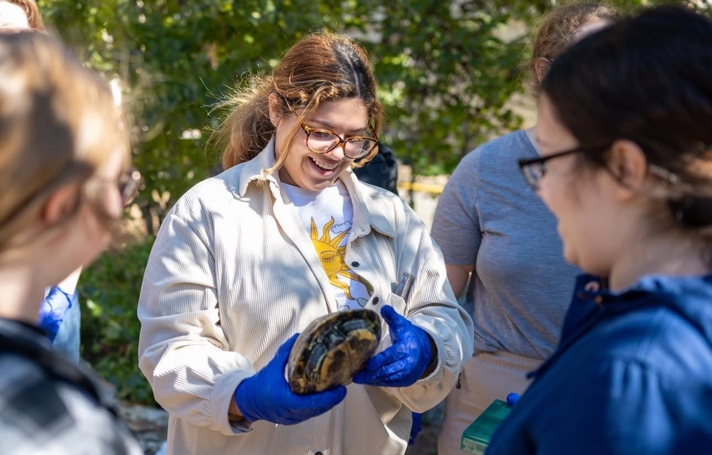
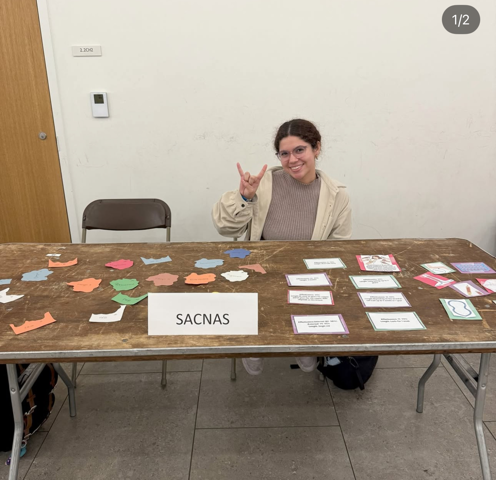
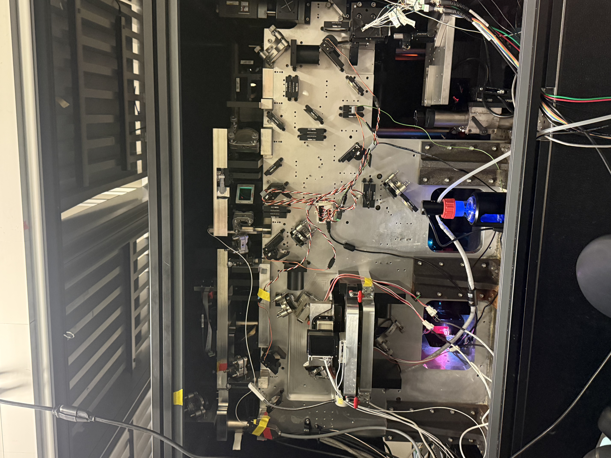
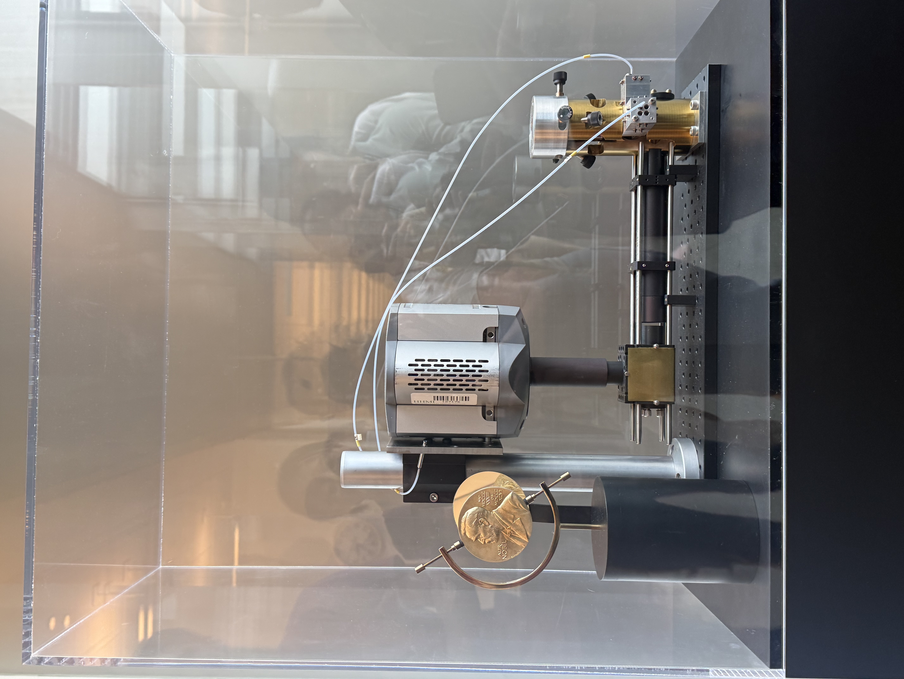
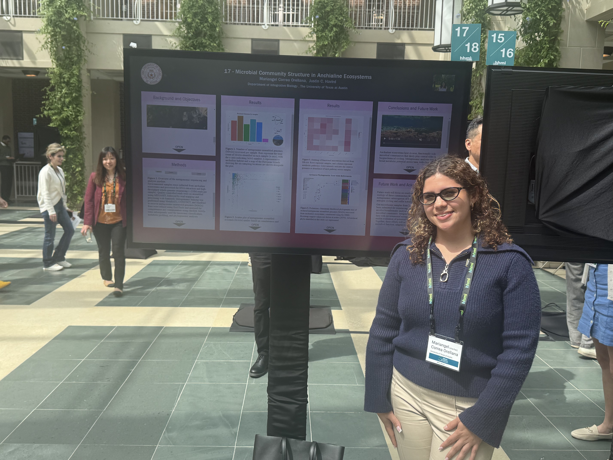
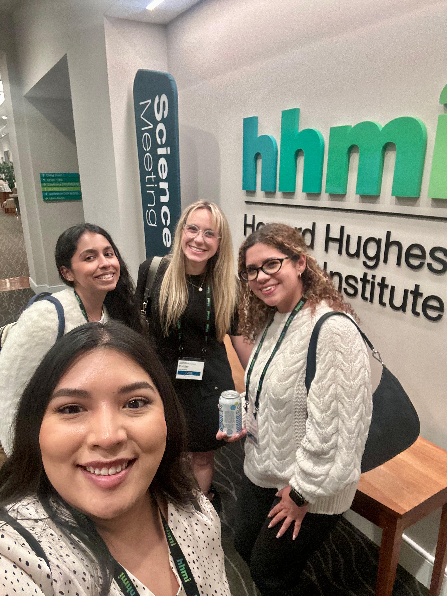
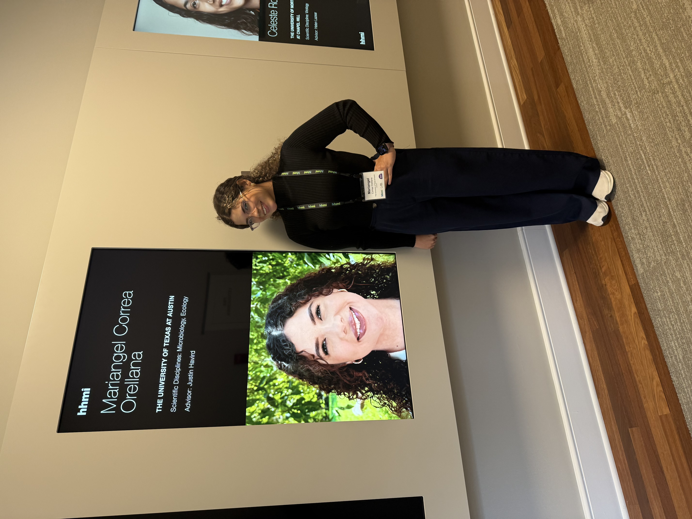
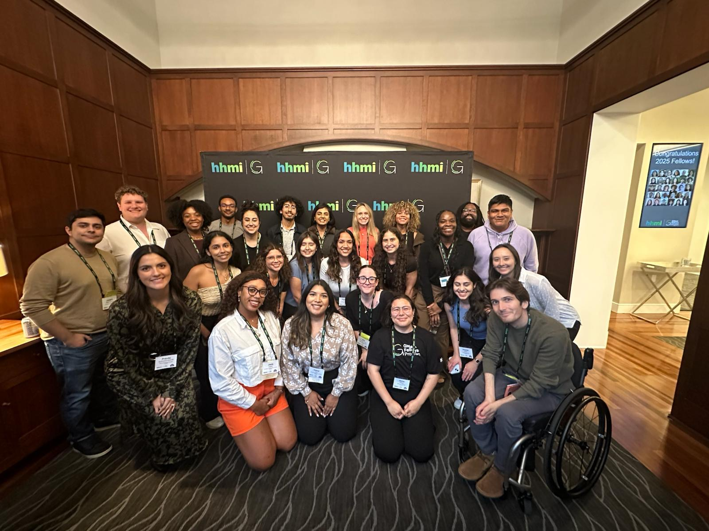
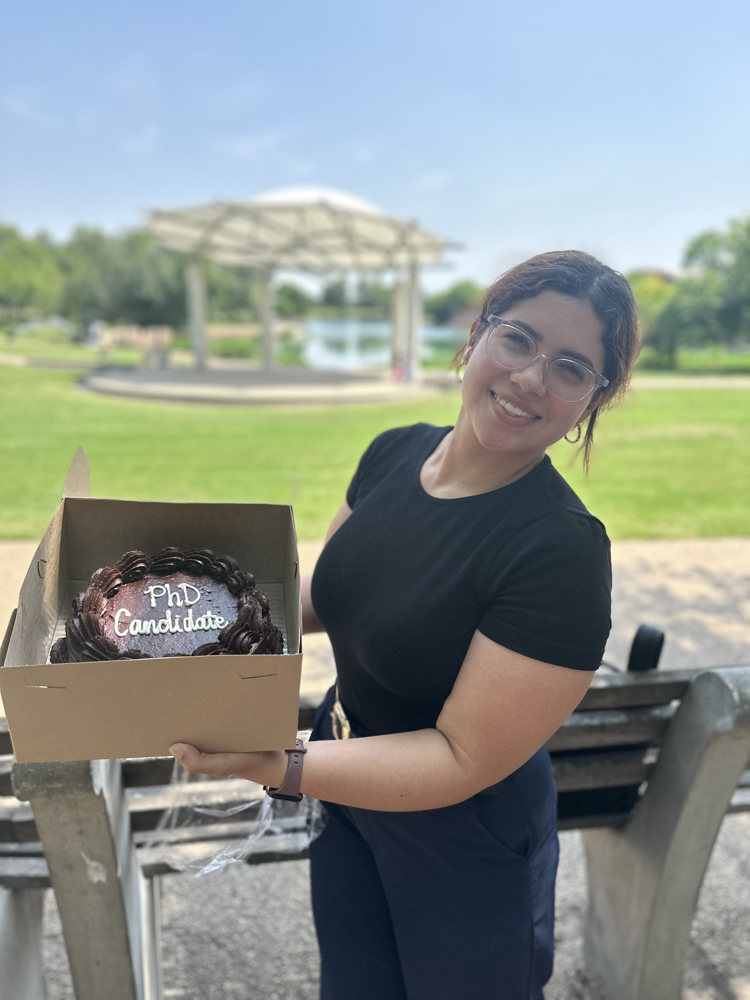
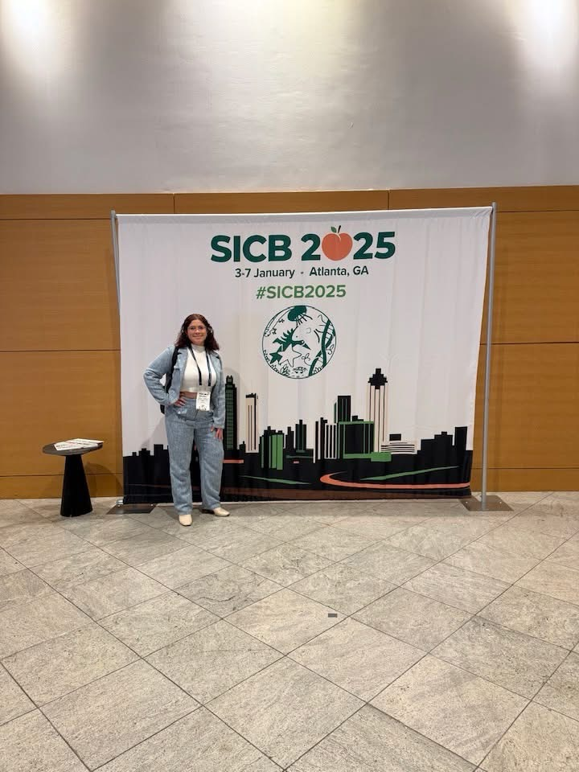

Microbial ecology, evolution, and host–microbe interactions
I'm Mariangel, a PhD Candidate in Ecology, Evolution and Behavior at the University of Texas at Austin, working in Dr. Justin Havird's lab. My research sits at the intersection of computational biology, microbial ecology, and host–microbe interactions — I use fieldwork, laboratory experiments, and bioinformatics to understand how microbial communities assemble in and on the animals and ecosystems that host them.
I believe science should be more inclusive, and I'm an advocate for fostering an atmosphere of inclusivity, fairness, and compassion for every member's background and heritage. As a Latina, immigrant, and first-generation student, I moved to the United States without knowing English and had to learn and adapt along the way — challenges I believe helped shape the scientist I am today. My goal is to one day run an independent lab built on kindness, a genuine passion for research, and continued advocacy for underrepresented students, like myself.
Current projects
My dissertation work uses wild, non-model systems — anchialine crustaceans, freshwater turtles — to ask how microbial communities assemble and interact with the animals and ecosystems that host them.
Functional diversity of microbial communities in the Hawaiian anchialine ecosystem
My first dissertation chapter investigates the functional biodiversity of microbial communities in Hawaiian anchialine habitats — land-locked pools connected to the ocean through underground fissures. Using fieldwork, laboratory experiments, and bioinformatic tools, I aim to uncover the ecological roles and interactions of key microbial taxa in these understudied ecosystems.


Environment and coevolution as drivers of the gut microbiome of Halocaridina rubra
I investigate how environment and coevolution shape the gut microbiome of Halocaridina rubra, the most abundant endemic crustacean in Hawaiian anchialine pools. Using field sampling, laboratory work, and bioinformatic analysis, I aim to determine how host phylogeny, diet, and geography influence the structure and composition of H. rubra's gut microbiome.
UT Turtle Pond Project
I studied the microbial communities of red-eared sliders (Trachemys scripta elegans) across various locations in Austin using 16S rRNA analysis, and served as a graduate student leader, mentoring undergraduate students in field sampling and microbial data analysis.


Comparative microbiome of high-elevation Pacific lakes
I'm comparing the microbiome of Lake Waiau, a high-elevation lake on Mauna Kea, against public datasets from high-altitude lakes in Chile and New Zealand, to understand how extreme elevation and geography shape microbial community structure across ecosystems.

Looking ahead, I want to keep working at the intersection of host-microbiome ecology and evolution, while moving toward something more applied — I'm still figuring out exactly where that will lead, but I'm hoping to carry this focus into my postdoc, pick up new techniques along the way, and build the foundation to one day run my own lab.
Selected publications
Media highlights
Leadership, outreach and mentoring
- Judge, CNS Tech & Science Undergraduate Research Forum: Served as a judge at the College of Natural Sciences Tech & Science Undergraduate Research Forum at UT Austin (April 15, 2026).
-
UT STEM Girl Day Volunteer (February 28, 2026): Volunteered with my SACNAS chapter at UT STEM Girl Day, our biggest outreach event, running activities like “draw yourself as a scientist” and dressing up as a scientist to get girls excited about science.


- Científico Latino Graduate Student Mentorship Initiative (GSMI), Mentor, Fall 2025–Spring 2026: Mentored Malia Miguel, now a PhD student in Microbiology at UC Riverside.
- SACNAS Chapter President, 2025–2026 — Society for the Advancement of Chicanos/Hispanics and Native Americans in Science, The University of Texas at Austin Chapter. Led the chapter and executive board, presided over meetings, set chapter goals, coordinated events, managed finances with the Treasurer, and maintained communication with national SACNAS and university offices.
- Ecolunch Seminar Series Coordinator, Spring 2025: Recruited and coordinated seminar speakers for the Ecolunch series, managing scheduling, communications, and logistics to ensure successful weekly seminars.
-
Food Donation Drive, Fall 2025: Led a food donation drive with my SACNAS chapter to support the UT Outpost food pantry and our campus community.

- Research Presentation (September 26, 2025): Presented my research and “a day in the life of a scientist” to students at West Hawaii Exploration Academy over Zoom.
- Speaker, “Unpacking the Turtle Microbiome: A Hands-On Example of What Undergraduate Research Really Looks Like” (November 2025): Invited talk for the ASM Undergraduate Chapter, UT Austin.
- Speaker, “Connecting the Dots” Graduate Student Panel (October 2025): Presented on research opportunities and pathways for undergraduates at UT Austin.
- SACNAS Chapter Vice President, 2024–2025: Helped lead initiatives that support underrepresented students in STEM through community building, professional development, and outreach events.
- EEBuddies Mentorship, 2025: Served as a graduate student mentor to an undergraduate student, providing guidance on applying to graduate school and exploring research opportunities.
-
Hot Science – Cool Talks! Volunteer, Fall 2024–present: I volunteer at Hot Science – Cool Talks every academic year with my SACNAS chapter, where we run activities before each talk to engage attendees and help them learn about the topic — including an interactive birth control matching game for the “This is Your Brain on Birth Control” event.


Latest updates










